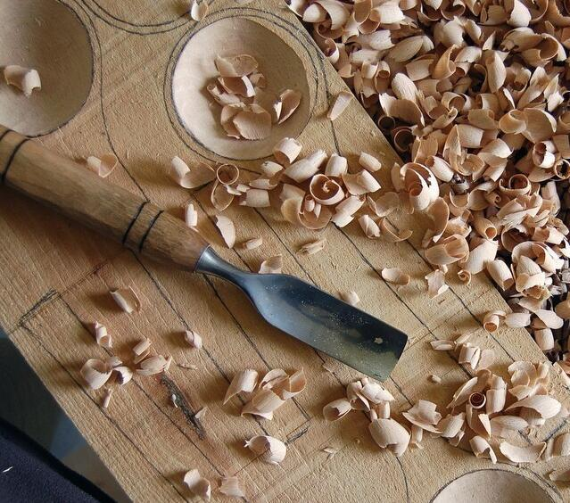
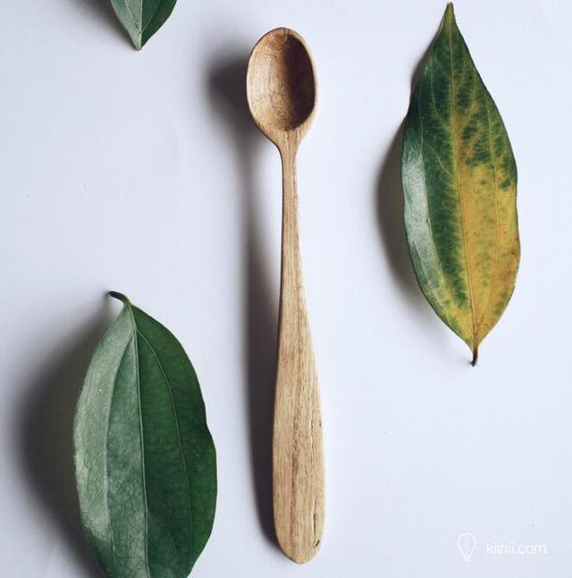
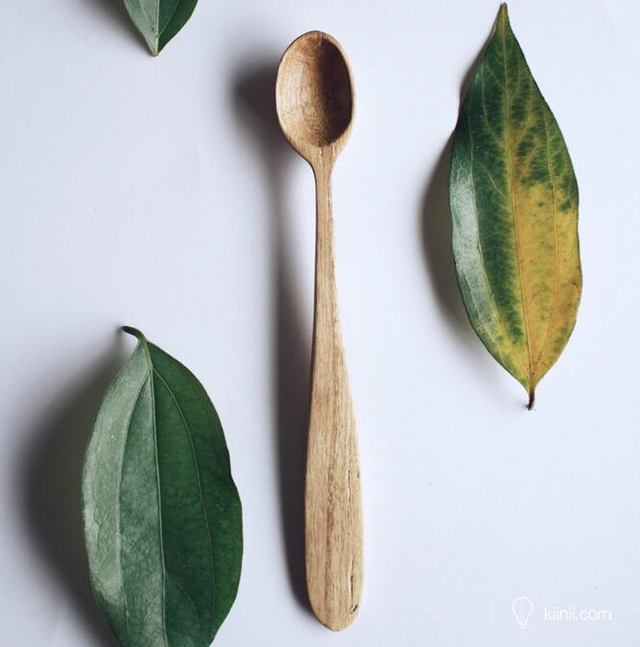

材料选择
教程所需准备的材料：
凿子、木锤
手工锯
什锦锉
木料1块
砂纸若干张
砂台钳

效果图

选择木料
选择自己喜欢的颜色勺子料，画出自己心里想要的样子

勾勒外形
在木料上画出想要的样式，通过刻刀等工具挖去木屑，这时光里会让你忘记烦恼

进一步完善外形
通过上一步的基本工具使用，现在要开始制作勺子，利用‘挖’，‘凿’，‘切’完美呈现外形

作品展示
精工细作，成品展示
 

在这里，
安静地做点自己喜欢的小物。
享受木作的乐趣，
还原生活的本真。
当美好的事物从我们手中生出，美好的品性也在我们内心成形。
每块木头背后都有一个故事，当初做一个木制品的时候所思所想的那个人，
希望在以后的岁月里偶尔间再次看到那个作品时，
我们心头还是满满的感动和美好，无论他/她是否在身边。
所以木头，思人。
木文化，是中华文化中的重要组成部分
木作文化，由木文化衍生而来，是木文化中的智慧部分，是木文化的核心
木作，就是以一种艺术的形式，让树木的生命与人的生命为伴
让它们的生命以一种物体的方式，在人类的生活中长久延续
中华木作，就是博大精深的中国传统文化！